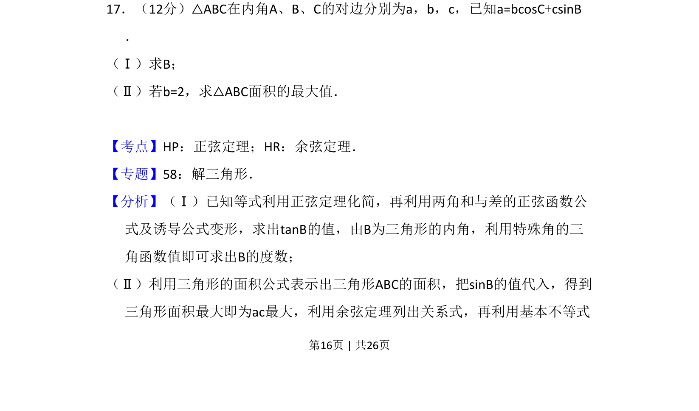
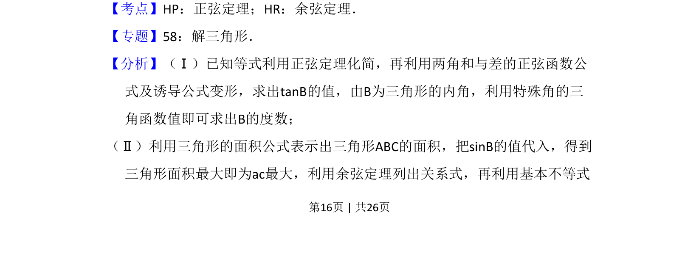
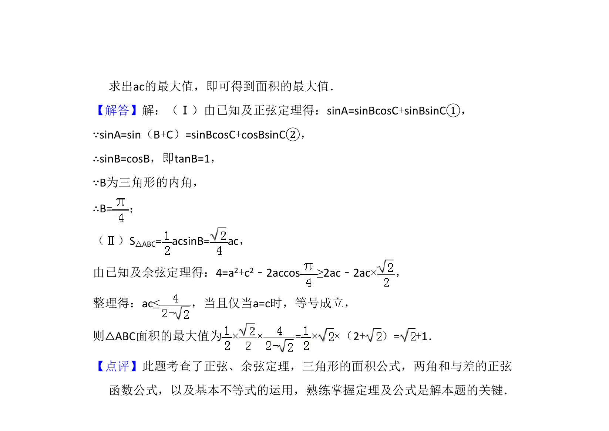

考点：正弦定理 余弦定理 基本不等式

已知三角形边角关系求角B，并求面积最大值。


📄 原 PDF 第 16 页：
素材/真题/吉林/2008-2024·（吉林）数学高考真题/2013年高考数学试卷（理）（新课标Ⅱ）（解析卷）.pdf
17．（12分）△ABC在内角A、B、C的对边分别为a，b，c，已知a=bcosC+csinB ． （Ⅰ）求B； （Ⅱ）若b=2，求△ABC面积的最大值．
【考点】HP：正弦定理；HR：余弦定理．菁优网版权所有 【专题】58：解三角形． 【分析】（Ⅰ）已知等式利用正弦定理化简，再利用两角和与差的正弦函数公 式及诱导公式变形，求出tanB的值，由B为三角形的内角，利用特殊角的三 角函数值即可求出B的度数； （Ⅱ）利用三角形的面积公式表示出三角形ABC的面积，把sinB的值代入，得到 三角形面积最大即为ac最大，利用余弦定理列出关系式，再利用基本不等式